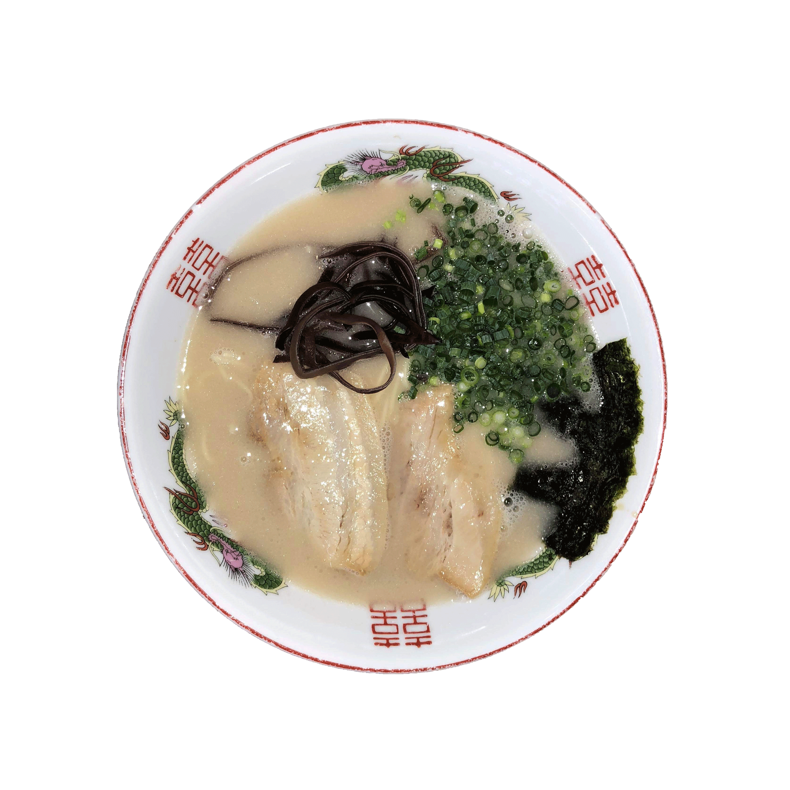

メニューを開く
TOP
すべてから選ぶ
スープから選ぶ
とんこつ
しょうゆ
しお
みそ
その他
地区から選ぶ
小倉北区
小倉南区
門司区
八幡西区
八幡東区
戸畑区
若松区

ラーメンまこと家
スープ
豚骨/その他(ワンタンメン)
住所
〒804-0054 北九州市戸畑区牧山新町1-26（
地図
）
電話番号
093-884-3988
営業時間
11:00~15:30 18:00~21:00
定休日
火曜日
平均予算
¥550~¥700
駐車場
あり